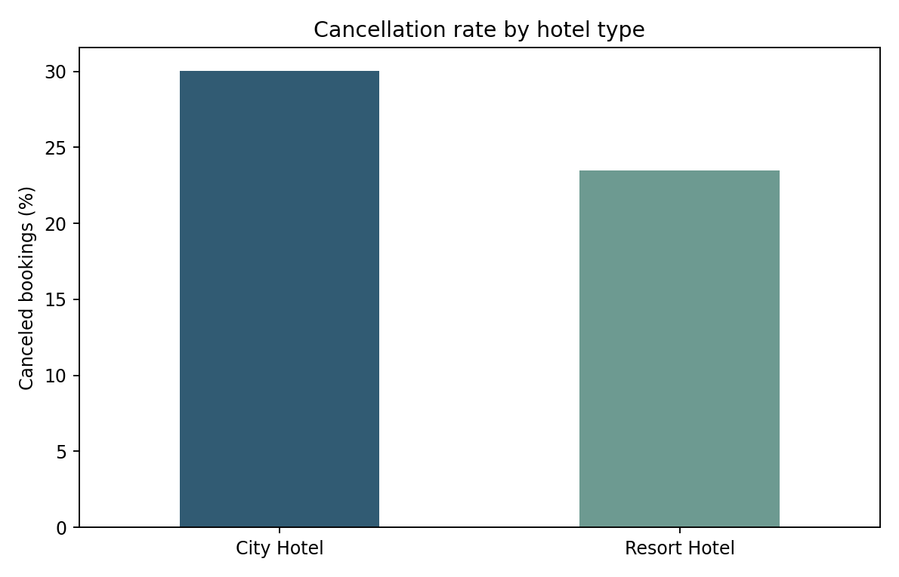
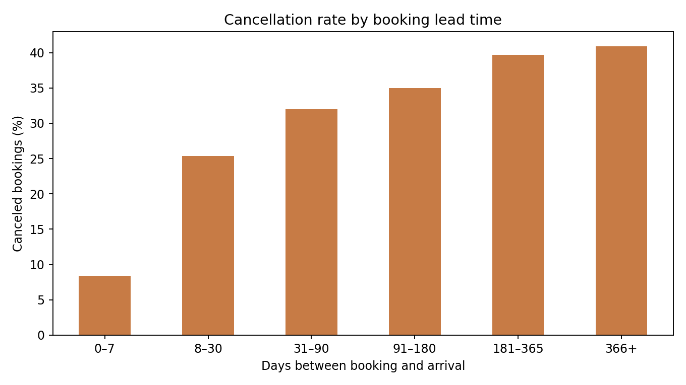
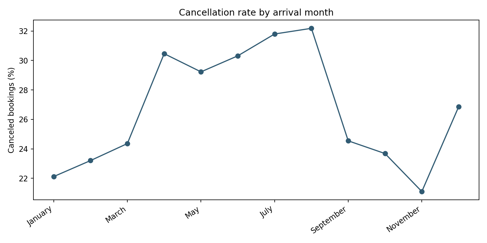
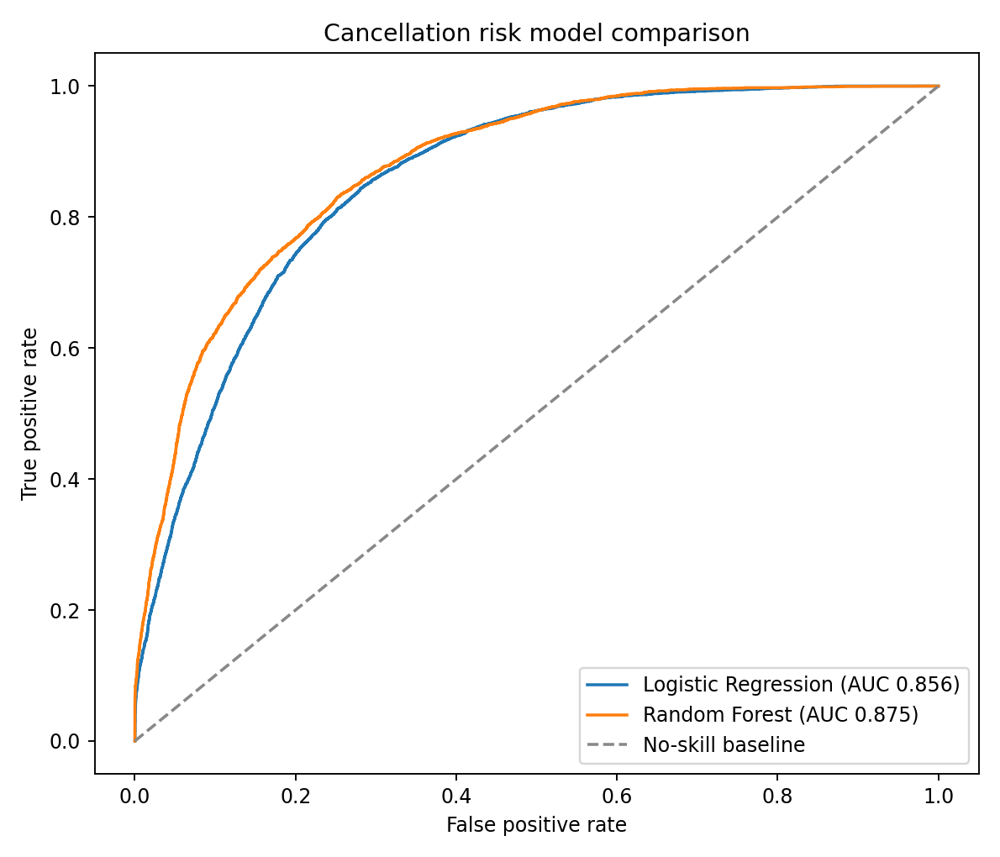
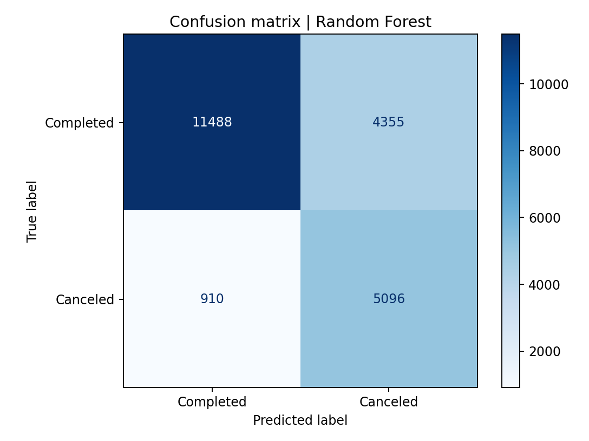
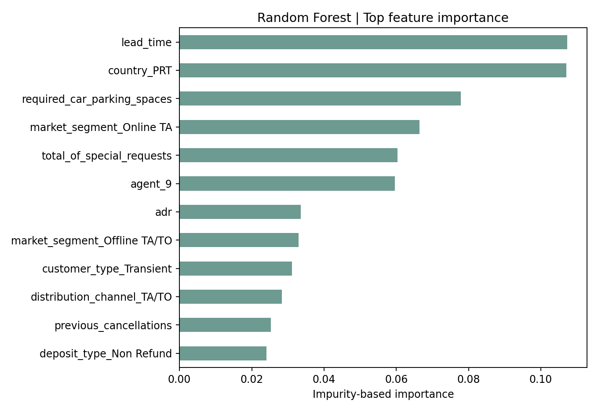

إلغاءات الحجوزات الفندقية
تحليل وصفي ومقارنة نموذجين لتقدير مخاطر الإلغاء من تفاصيل الحجز المتاحة قبل الوصول.
النتيجة في سطور
بعد استبعاد الصفوف المتطابقة بالكامل، درّبت نموذجين على البيانات. حقق Random Forest أفضل تمييز بين الحجوزات الملغاة والمكتملة، بقيمة ROC-AUC تبلغ 0.875. وعلى عتبة 0.5، التقط النموذج 84.9% من الإلغاءات، وكانت 53.9% من تنبؤاته بالإلغاء صحيحة.
حُذف 31,994 صفًا متطابقًا. لا يحتوي الملف على معرّف حجز، لذلك لا يمكن معرفة ما إذا كانت هذه نسخًا مكررة أم حجوزات مستقلة متطابقة. انخفض معدل الإلغاء من 37.0% في الملف الخام إلى 27.5% بعد الحذف؛ لذلك يعرض التقرير هذا القرار وأثره بدل اعتباره تنظيفًا محايدًا.
أنماط من البيانات
- معدل الإلغاء في City Hotel بلغ 30.0%، مقابل 23.5% في Resort Hotel.
- وسيط الفترة بين الحجز والوصول 80 يومًا للحجوزات الملغاة و38 يومًا للمكتملة.
- متوسط الطلبات الخاصة 0.54 للحجوزات الملغاة و0.76 للمكتملة.
- سجلت حجوزات Non Refund معدل إلغاء مرتفعًا قدره 94.7% ضمن 1,038 سجلًا؛ يحتاج هذا النمط إلى مراجعة تعريف الحقل وسياسة البيانات قبل أي استنتاج تشغيلي.



مقارنة النماذج
استخدمت تقسيمًا طبقيًا عشوائيًا بنسبة 75/25. عولجت القيم الناقصة داخل مسار التدريب، ورُمّزت المتغيرات الفئوية، ووُحّدت المتغيرات الرقمية.
| Model | ROC-AUC | Avg. precision | Accuracy | Precision | Recall | F1 |
|---|---|---|---|---|---|---|
| Logistic Regression | 0.856 | 0.671 | 0.766 | 0.551 | 0.810 | 0.656 |
| Random Forest | 0.875 | 0.729 | 0.759 | 0.539 | 0.849 | 0.659 |
استُبعدت حالة الحجز النهائية وتاريخ تسجيلها لأنها تكشف النتيجة بعد وقوعها. واستُبعد أيضًا نوع الغرفة المخصصة وتعديلات الحجز لأنها قد لا تكون معروفة عند إجراء الحجز.



حدود القراءة
التقييم مبني على تقسيم عشوائي واحد، وليس اختبارًا زمنيًا على حجوزات لاحقة. كما أن معالجة الصفوف المتطابقة تؤثر في تركيب العينة. إذا كان الهدف تشغيل النموذج فعليًا، فالأفضل تثبيت تعريف التكرار، ثم اختبار زمني وضبط عتبة التنبيه وفق تكاليف الفندق.